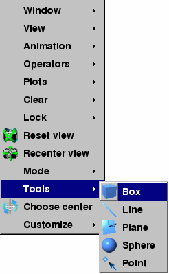
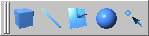

The Popup menu contains a Tools menu (see figure) that lists of all of VisIt's interactive tools. Each tool shown in the menu has an associated icon that is used to indicate if the tool is enabled and if it is available in the vis window. Some tools are not available if the vis window does not contain plots or if the plots in the vis window are the wrong dimension to be used with the tool. In that event, the tool cannot be activated and the menu and toolbar entries for that tool are disabled. If a tool is available, its icon is bright blue; otherwise the icon is grayed out. If a tool is enabled, its icon has a selection rectangle around it. To activate a tool, choose an inactive tool from the Tools menu or click on its button in the Toolbar. To deactivate a tool, choose the tool that you want to deactivate from the Tools menu or click on its button in the Toolbar.
|  |
| Figure 11 |
|  |
| Figure 12 |